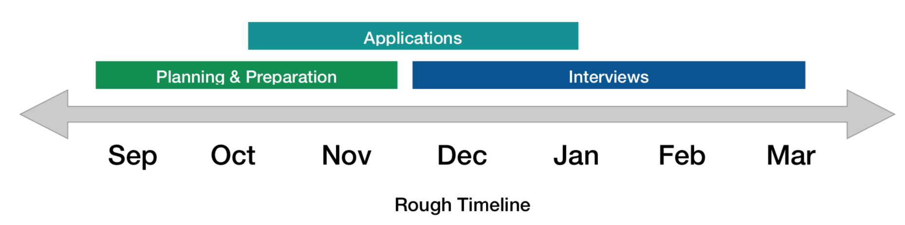

When I was applying to internships last fall, there was a lot I didn’t know about the process. So I thought I would go over my experience in this post, in hopes that I can demystify the process a little for future students.
Before I begin, some context on my background: I am a 4th year biostatistics PhD student doing research in cancer and statistical genomics. I mostly applied to data scientist internships in tech/biotech companies and statistics/biostatistics internships in pharmaceutical companies, and this summer, I will be doing an internship in data science at Amazon. The more similar this sounds to your situation, the more likely your experience will be like mine, although I think much of what I describe will also be broadly applicable to graduate students applying to internships.
The internship application process can be broken down into 3 stages: 1) Planning 2) Applications 3) Interviews. I will describe each of these stages in detail below. But timing-wise, if you want to do an internship in the summer of 2021, you can expect to start planning by September of 2020 and interviewing up until March of 2021. I’ve sketched out a rough timeline for when each of these stages will happen.

Depending on how much you’ve thought about your future career already, you may or may not have a good idea of what positions you should apply to. For me, I only vaguely thought that I might be interested in a career in industry, but I really did not know much about what roles I could be a good fit for.
To start understanding the landscape of jobs, what I found to be helpful was to look up where my department alumni have gone after they graduated.1 This will give you an idea of what companies are hiring people from a similar academic background as you. Initially, the list of companies might just look like a meaningless list of words because you may not recognize many of them. But you can read more about the companies on their websites or on Google/Wikipedia and start organizing them into a meaningful framework, such as by grouping them by sector. After a while, once you have a better understanding of the job landscape, you’ll find that this list makes more intuitive sense and you’ll have a feel for what kinds of roles people tend to go into.
Once you have some idea of what kind of companies you are interested in, you should figure out when their internships are posted so that you don’t miss it. In my experience, tech companies tend to post theirs earlier, around October/November, while pharmaceutical companies post theirs later, in December/January. However, this can vary a lot from company to company and just remember that it’s better to be ready earlier rather than later. During my internship search, I didn’t start applying until the end of October, but in retrospect, it would’ve been slightly better to start a few weeks earlier because a few companies did tell me I was too late by the time I applied.
Aside from looking up things on your own, you’ll find at some point that you can get more insight into these different positions and companies by talking to people. For example, these could be the department alumni who work in a position you are interested in. By talking to people 1:1, you can get advice that’s much more detailed and catered to your situation than what you’ll find online.
Learning more about jobs is one reason you may want to network with people, but there are also other reasons to do so. I would say that there are 2 groups of people that are helpful to talk to: 1) people who work at a role you’re potentially interested in (e.g. a data scientist) and 2) people who work at a company or sector you’re interested in (e.g. someone who works at Amazon). Depending on which group they fall into, they’ll be able to help you with different things. For example, some types of questions you can ask are the following:
Informational questions: What is it like to work as X? What is it like to work at company Y?
General career advice: Why did they pursue this career and what do they want to do in the future? What do they think about doing X instead of Y (e.g. working at small vs big companies)?
Direct help: Can you help me review my resume or refer my application? When are internships posted? What is the interview like?
Now if you’re the type of person who thinks that networking is intimidating, don’t worry! I was also in that boat and it turns out that it’s really not that bad. Pretty much the worst thing that can happen is that they don’t respond to your e-mail, so there’s no reason to be too timid. In general, I was surprised by how willing people were to talk to me and help me. Perhaps as a practical tip, you can start by reaching out to people that you feel more comfortable talking to first, e.g. your friends or professors. Then you can reach out to people that you don’t know as well, after you’re more used to the idea.
I would recommend reaching out beyond your first-degree social circle though. It’s great if you have friends or know department alumni that you can network with, but it’s likely that they’ll also know even more people who can help you. But you have to let them know that you’re looking! What I did was I just asked my friends and professors if they knew anyone who worked as X or worked at company Y and most of the people I ended up talking to were actually these second-degree connections that someone I knew connected me to.
Regarding the mode of communication, I usually left the choice of whether to communicate by e-mail or phone2 up to the person I was contacting, though you may find that you prefer one over the other. I think there are benefits to either. Over e-mail, you can think more thoroughly about your questions and what they’re saying, but over the phone, it’s easier to feel like you’ve “met” someone and quicker to have a back-and-forth conversation with follow-up questions.
One last thing – networking will likely be an ongoing thing throughout your application process. As you learn more and as you progress through the different stages and start interviewing, you may find that you have new and different questions to ask.
As a PhD student, you may not have edited your resume in a long time. In that case, you want to draft up a resume earlier (e.g. by late summer) so that you have time to edit it.
For revising your resume, what was really helpful for me was to visit my university’s career office. Long story short, what I realized through their edits was that I wasn’t framing my research experiences on my resume correctly. In my first draft, I wrote about them as if I was explaining the projects to someone else in my department, but what I should have done was to frame them in terms of the job posting. This is because at many companies, the resume will be screened by a machine or a recruiter; in both cases, they are just looking to see if your resume fulfills the qualifications for the role, so you want to make that as clear as possible and strip out irrelevant details.
Additionally, if you know people who work in the field, you can (politely) ask if they are willing to help look at your resume, so that you avoid making any major mistakes that may be specific to the field. In general, it’s also good to have someone else proofread your resume. Since you will probably go through many edits and read your resume dozens of times, it’s natural and easy for you to become blind to your typos.
One of the things I remember being confused about is where I was supposed to find internship postings. In summary, there are 4 places I looked:
Company websites - If you’ve gone through the list of your department alumni, you will have an initial “seed” list of a couple companies you are interested in and you can check their job listings webpage for internships. If they haven’t posted any yet, you may have to check periodically. If you have a contact at the company, this is made less tedious because they can likely contact the company HR for you and give you an estimate for when internships are posted or even let you know once it’s been posted.
Job boards like LinkedIn, Glassdoor, or Handshake - I did find a lot of postings through these job boards. What’s nice about them is that after you’ve applied to a couple, their recommendation algorithm will surface similar listings.
ASA Internship List (e.g. here’s the 2021 version) - This is advice more specific to biostatistics PhD students, but every year at the beginning of December, ASA posts a list of internships. A lot of them (though not all) are for PhD students and a lot of them (though not all) are for pharmaceutical companies, so this is a good place to look if you’re interested in that.
Social media/other sources - I think nearly all the places I applied to came from #1-#3, but I would also browse the job channels on Slack to see if there are relevant internships posted. I also see people post listings on Twitter sometimes.
Regardless of the source, it will probably be helpful for you to organize these postings. For me, I kept three lists in a spreadsheet: 1) Positions I’ve already applied to, 2) Positions I’m going to apply to but haven’t yet, 3) Companies I want to check postings for. For each posting, you can keep track of things like who referred you (if any), when you applied, and when the interview dates are. I would also suggest taking a screenshot of the job posting and not just copying the link to it, because sometimes they might get taken down while you’re still interviewing and want to review what the job posting said.
There are a few things you will include in an application. The first is your resume, which you can expect every place to ask for. Oftentimes, the resume is only uploaded to pre-populate a form, but it’s the same idea. I would say half the places I applied to additionally asked for a cover letter and a few places asked some open-ended questions that seemed to serve a similar function to a cover letter. For example, they may ask why you are interested in this company or what relevant experience you’ve had.
Regarding how much time you want to spend personalizing each application to the company, I think that depends on you and how interested you are in that position. Personally, all I did for the cover letter was that I pre-wrote a couple of different stories (4~5), then picked 2 that were most relevant to the position I was applying to and added a few sentences for why I was interested in interning at that particular company/position. For the resume, I didn’t do any personalization. In retrospect, I think it would have been a good idea to at least create two versions of my resume, one for more research-y biostatistics roles at pharmaceutical companies and one for the data scientist roles because they are read by different audiences.
Deadlines: Something I was naive about and didn’t really understand initially is that applications are evaluated on a rolling basis. Aim to apply as soon as possible after something is posted, because once a company’s interview pipeline is filled up, they may stop accepting new applicants to interview. The only exception is if they explicitly state that they won’t look at any applications until a certain date, in which case you should try to submit yours on that date.
Referrals: You may have heard that it’s helpful to get a referral when you apply. This is also why you should try networking before you apply, so that people can actually refer you before you submit your application. While a referral probably does raise your chances3 of getting to the interview rounds, I will say that I heard back from many places that I didn’t have a referral for, so not having one doesn’t automatically preclude you from getting an interview. On the other hand, the fastest I heard back from any company after submitting an application (< 1 day) was also one I had a referral for, which I’m guessing wasn’t a coincidence.
Number of Applications: The number of applications you will submit is perhaps hard to predict. It depends on how successful you are at getting interviews and offers. But just remember that each stage in the application process can winnow down the list of companies very rapidly, since you can’t expect that you will get an interview/offer for every place you applied to. For reference, I applied to ~50 postings. Of those 50, I never heard back from ~25, was rejected by ~15, and was invited to interview by ~10. In the end, I had 1 offer from 50 applications.4
In general, you will have 2~3 interviews. The first interview (if it happens) is usually a short screening with a recruiter. The second and third interviews will be with the hiring manager or other members of the team that you can expect to work with. A few companies also asked me to do online assessments or take-home assignments, so you will have to budget your time accordingly. Even without additional assessments, interviews (and rejections) can take up quite a lot of your mental energy and time, so be ready for that.
The interviews I had all consisted of a mix of technical and behavioral questions.
For the technical questions, they will be specific to the position and team. You can (and should) ask the recruiter what to expect and look them up on Glassdoor. In my experience, it was a variety of things like coding questions, general stats questions, role-specific questions where I was asked to walk through the types of cases/problems they encounter at the company, or detailed questions about my past experiences with analysis and programming.
For the behavioral questions, I would suggest going through some lists of behavioral questions online and practice thinking of stories for them. It’s widely recommended to structure your answers using the STAR method, which you can read more about.
There are a few questions I would recommend you spend time preparing answers for. The first question is some version of who you are/what your background is/what relevant projects you’ve worked on. This is something pretty much every company will ask you, so it’s worth your time to prepare a good response. You might also want to consider timing yourself and making sure you’re not talking for too long (e.g. aim for ~2 min). The second is why you’re interested in the position/company. Less than half of my interviews asked me this, but it’s probably still a good idea to prepare a decent answer because I imagine it looks terrible if you don’t have an answer. The third question, which may be something more specific to data science-y roles, is to talk about a time you worked in a collaborative setting. A lot of companies, I would say more than half, asked me about my collaborative experience, so that’s also a good one to prepare.
At the end of the interview, you will typically have time to ask the interviewer questions. Always have questions to ask because your interviewer will be expecting it, it shows that you are interested in the role, and perhaps most importantly, you want to understand the role so that you can decide if it’s something you actually want to do if you get an offer. To simplify things, I just used the same bag of prepared questions for every interview and asked any follow-up questions I thought of during the interview.
Interviews are probably the most nerve-wracking part of the process, but it might help to think of them more as conversations or discussions rather than an evaluation.5 You will also likely encounter a wide variety of interview demeanors – some are very friendly, some are stern, and some are difficult to understand – but try not to be too put off by it and just do the best you can!
Overall, applying to internships can be a tough and time-consuming process. But I hope this post helps you better understand what to expect so that you have a sense of what you will need to do.
The PhD alumni placement for Johns Hopkins’ biostatistics program is posted here.↩︎
I suppose there’s also the in-person meet-up option when there isn’t a pandemic.↩︎
Perhaps significantly, but how much a referral helps likely varies from company to company.↩︎
Since I took my first offer, it’s possible that I would have gotten more offers had I continued with other companies’ interviews, but that’s again hard to predict.↩︎
Of course, don’t be so casual that you forget that you’re advocating for yourself. After one of my interviews, I realized I’d spent many of my responses downplaying my skills and expressing uncertainty about what I can do. This is fine in an honest meeting with your advisor, but not exactly helpful in an interview setting!↩︎